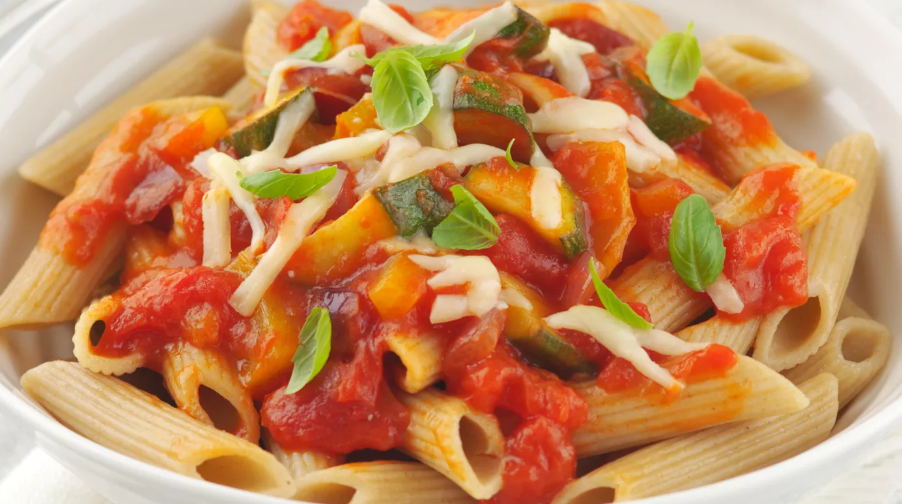

Mediterranean Pasta

Sunshine in a Bowl
Healthy, delicious and super simple to make. You can make this ahead of
time and store it in the fridge or freezer.
Ingredients
- 1 tbsp. olive oil
- 1 clove garlic crushed
- 1 red or yellow pepper finely chopped
- 1 red onion chopped
- 1 vegetable stock cube
- 150g courgette chopped
- 400g tin of chopped tomatoes
- 40g grated cheddar cheese
- 220g wholemeal pasta
- Fresh basil
Steps
-
Heat the olive oil in a large non-stick pan and add the garlic, onions,
peppers and courgettes. Cook for 5 minutes until softened and then add
the tinned tomatoes, the stock cube and 100mls boiling water.
-
Bring to the boil and stir to make sure the stock cube is dissolved.
Simmer gently with the lid on for 20 minutes.
- Cook the pasta according to the instructions.
-
Drain the pasta and add the sauce, sprinkle with cheese and basil and
serve.